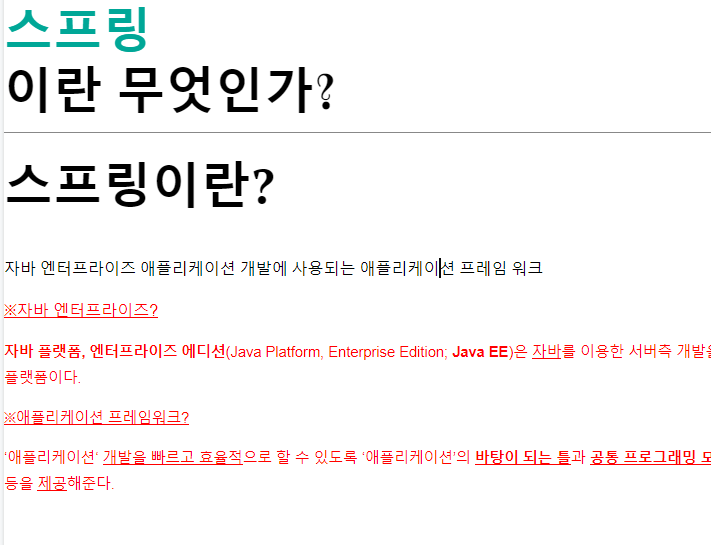

=
컴퓨터 기초 지식
컴퓨터 지식 칼럼
하드웨어
인터넷
리눅스 시스템
Java
자바 칼럼
자바의 정석
Spring
스프링 칼럼
토비의 스프링
스프링 부트
최신 글

스프링이란 무엇인가?
"스프링이란? 자바 엔터프라이즈 애플리케이션 개발에 사용되는 애플리케이션 프레임 워크...."
서블릿이란 무엇인가?
"서버에서 웹페이지 등을 동적으로 생성하거나 데이터 처리를 수행하기 위해...."
리눅스의 특징
"유닉스는 1970년대 초에 미국........."